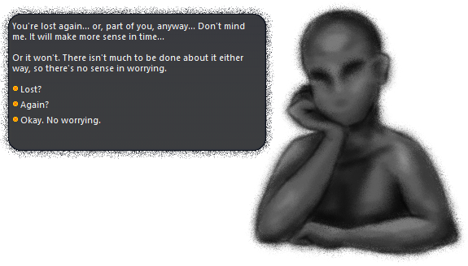
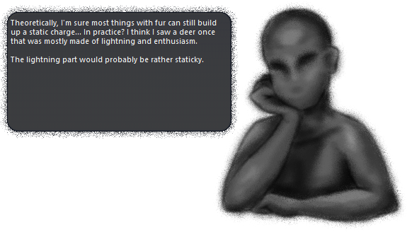

I Often Dream Of Marigolds
Permissions (regarding fanworks, redistribution, etc.)
I Often Dream Of Marigolds is a mysterious, otherwordly visitor made as part of ゴーストマスカレード5 (Ghost Masquerade 5). It uses the Fading Like A Dream balloon.
Features
- A peculiar friend
- A dream-like world
- Memories to uncover
- Branching conversations with secrets to discover
- A shell that changes as the story progresses
